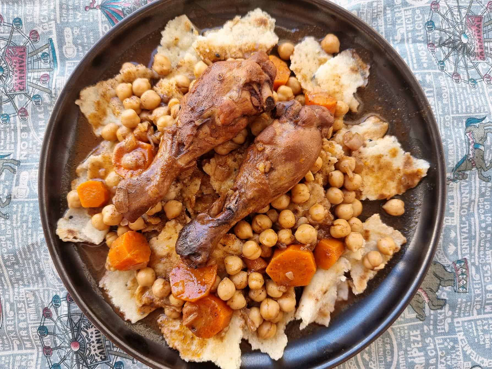

Home
Chakhchoukha

Description :
Algerian Chakchouka is a beloved Algerian dish that combines torn pieces of thin flatbread (rougag) with a flavorful stew of meat, chickpeas, and vegetables. The bread, often handmade and cooked on a griddle, is torn into bite-sized pieces to form the base of the dish. The stew is made by simmering lamb or chicken with tomatoes, onions, garlic, and spices like paprika and cinnamon, creating a hearty and aromatic sauce.
Once prepared, the stew is poured over the torn bread, allowing it to absorb the rich flavors. This dish is a staple at family gatherings and festive occasions, known for its comforting texture and robust taste. Garnished with fresh herbs, Chakhchoukha is best enjoyed hot, often shared among loved ones as a symbol of warmth and hospitality.
Ingredients :
For the Bread (Rougag):
- 2 cups fine semolina
- 1/2 tsp salt
- Water (as needed)
For the Stew :
- 500g lamb or chicken pieces
- 2 tbsp olive oil
- 2 onions, finely chopped
- 2 garlic cloves, minced
- 2 large tomatoes, grated or blended
- 1 tbsp tomato paste
- 1 tsp ground paprika
- 1/2 tsp cinnamon
- 1 tsp ras el hanout (optional, for added flavor)
- 1 tsp black pepper
- Salt
- 1 cup chickpeas (soaked overnight or canned)
- 3-4 cups water or broth
- ptional vegetables: carrots, potatoes, zucchini
Steps :
Make the Bread (Rougag):
- Mix semolina, salt, and water to form a soft dough
- Roll into thin circles and cook on a hot griddle until lightly browned.
- Tear into small pieces and set aside.
Prepare the Stew:
- Heat oil, brown the meat, and sauté onions and garlic.
- Add tomatoes, tomato paste, spices, salt, and pepper. Cook for 5 minutes.
- Add chickpeas, water/broth, and optional vegetables. Simmer until meat is tender (1.5-2 hours).
Assemble and Serve:
- Place torn bread on a serving platter.
- Pour the hot stew over the bread.
- Garnish with fresh herbs and serve immediately.